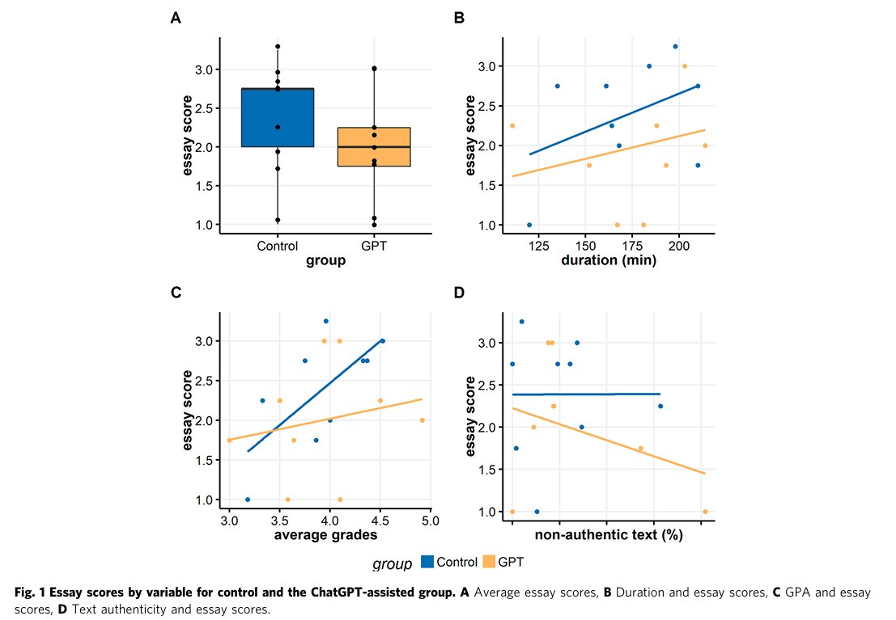

The Study at a Glance
Study Overview
Comparison between two Groups
One group wrote their essay traditionally, while the other group was allowed to use ChatGPT-3.5 freely as a writing assistant.
Argumentative essay writing
Students had to write an essay about the advantages and disadvantages of biometric identification in forensic sciences.
Master’s students
the participants were second-year master’s students from the University Department of Forensic Sciences.
Essay quality and authenticity
The researchers measured essay grades, writing duration, text authenticity, similarity between essays, and possible AI-generated content.
Main findings
ChatGPT did not improve essay grades
The average essay grade was C in both the traditional writing group and the ChatGPT-assisted group.
Students did not write faster
The ChatGPT group did not finish the task faster than the control group, even though ChatGPT can generate text quickly.
Authenticity was slightly lower
The ChatGPT-assisted group showed slightly higher text unauthenticity, but the similarity between all essays was generally low.
Experience matters
The study suggests that ChatGPT may only be helpful when students already know how to guide, evaluate, and integrate AI-generated content.
Visual Summary of the Score Results

Why is this study relevant?
ChatGPT can support writing, but it does not automatically make students write better essays.
This study is relevant because it challenges the assumption that AI tools always improve academic performance. Even though ChatGPT can generate fluent text, students still need writing skills, subject knowledge, critical thinking, and the ability to judge whether the AI output is useful.
Why is it special to me?
AI as support, not replacement
I find this study interesting because many students use ChatGPT for writing tasks, but the study shows that using AI does not automatically lead to better results.
Guidance is important
For me, the study shows that conversational AI should be designed in a way that helps students think, structure, and reflect instead of simply producing text for them.
Why is it a good example?
It is a good example because it studies ChatGPT in a realistic student writing situation. The results are balanced: ChatGPT was useful as a possible assistant, but it did not improve the students’ essay quality, writing speed, or authenticity.
Limitations and possible bias
- The sample size was very small, with only 18 students in total.
- The study focused on one university and one specific student group.
- The essays were written in Croatian, while many AI detection tools work better in English.
- It was the students’ first interaction with ChatGPT, so lack of experience may have affected the results.
- The study used ChatGPT-3.5, so newer AI models could produce different outcomes.
Key takeaway
AI writing tools need critical and skilled users.
Bašić et al. (2023) show that ChatGPT-3.5 can assist students during essay writing, but it does not automatically improve writing quality. For designers, this means that AI tools should support learning, reflection, and critical evaluation instead of only making writing easier or faster.
Abbreviations
AI – Artificial Intelligence
GPT – Generative Pre-trained Transformer
Source
Bašić, Ž., Banovac, A., Kružić, I. et al. ChatGPT-3.5 as writing assistance in students’ essays. Humanit Soc Sci Commun 10, 750 (2023). https://doi.org/10.1057/s41599-023-02269-7